| Jahr | Prognose | Wachstum |
|---|---|---|
| 1975 | 2.00 | -3.6 |
| 1976 | 4.50 | 5.6 |
| 1977 | 4.50 | 2.4 |
| 1978 | 3.50 | 3.4 |
| 1979 | 3.75 | 4.4 |
| 1980 | 2.75 | 1.8 |
| 1981 | 0.50 | -0.3 |
| 1982 | 0.50 | -1.2 |
| 1983 | 1.00 | 1.2 |
| 1984 | 2.50 | 2.6 |
| 1985 | 3.00 | 2.5 |
| 1986 | 3.00 | 2.5 |
| 1987 | 2.00 | 1.7 |
| 1988 | 1.50 | 3.4 |
| 1989 | 2.50 | 4.0 |
| 1990 | 3.00 | 4.6 |
| 1991 | 3.50 | 3.4 |
| 1992 | 2.50 | 1.5 |
| 1993 | 0.00 | -1.9 |
| 1994 | 0.00 | 2.3 |
| 1995 | 3.00 | 1.9 |
| 1996 | 2.00 | 1.4 |
| 1997 | 2.50 | 2.2 |
10 Untersuchung von zwei Merkmalen in R
10.1 Übersicht Dataframes für diese Folien
| Name | Inhalt |
|---|---|
d_svrw |
Jahreswerte für Wirtschaftswachstum und -prognosen vom Sachverständigenrat für Wirtschaft |
d_le_latest |
Lebenserwartung und Entwicklungsindikatoren in verschiedenen Ländern von der Weltbank |
d_pisa |
Pisa-Studie vom OECD |
Quellen: Fahrmeir et al. (2023): Statistik - Der Weg zur Datenanalyse, Weltbank, OECD
10.2
10.2.1 Sachverständigenrat für Wirtschaft
| Variable | Inhalt |
|---|---|
Jahr |
Betrachtetes Jahr |
Prognose |
Vom Sachverständigenrat prognostiziertes Wirtschaftswachstum |
Wachstum |
Tatsächlich eingetretenes Wirtschaftswachstum |
10.3
10.3.1 Weltbank
| Variable | Inhalt |
|---|---|
year |
Jahr |
country |
Land |
le |
Life expectancy at birth, total (years) SP.DYN.LE00.IN |
gdppc |
GDP per capita (current US$) - NY.GDP.PCAP.CD |
edu |
Gov. expenditure on education (% of GDP) - SE.XPD.TOTL.GD.ZS |
he |
Current health expenditure (% of GDP) - SH.XPD.CHEX.GD.ZS |
gini |
GINI index - SI.POV.GINI |
| year | country | le | gdppc | edu | he | gini |
|---|---|---|---|---|---|---|
| 2005 | Albania | 75.21700 | 2709.1429 | 3.23872 | 6.342830 | 30.6 |
| 2000 | Angola | 47.11300 | 555.2969 | 2.60753 | 2.503650 | 52.0 |
| 2014 | Argentina | 76.25200 | 12245.2564 | 5.36144 | 6.407625 | 41.4 |
| 2015 | Armenia | 74.44500 | 3617.9357 | 2.80591 | 10.140838 | 32.4 |
| 2010 | Australia | 81.69512 | 51936.8887 | 5.56590 | 8.467782 | 34.7 |
| 2014 | Austria | 81.49024 | 51704.5412 | 5.44898 | 10.285967 | 30.5 |
| 2005 | Azerbaijan | 68.75000 | 1578.4024 | 2.97462 | 7.398073 | 16.6 |
| 2000 | Bangladesh | 65.32400 | 405.6033 | 2.12508 | 2.403331 | 33.4 |
| 2015 | Belarus | 73.62439 | 5949.1063 | 4.78752 | 6.111325 | 26.7 |
| 2014 | Belgium | 81.28780 | 47351.9742 | 6.59685 | 10.395034 | 28.1 |
| 2015 | Benin | 60.63900 | 783.9631 | 4.35652 | 3.991901 | 47.8 |
| 2014 | Bolivia | 68.35700 | 3124.0003 | 7.28535 | 5.777249 | 47.8 |
| 2009 | Botswana | 58.45000 | 5185.7298 | 9.63292 | 6.745773 | 60.5 |
| 2014 | Brazil | 75.04200 | 12026.6194 | 5.94848 | 8.431892 | 51.5 |
| 2013 | Bulgaria | 74.86098 | 7674.8619 | 4.06197 | 7.849151 | 36.6 |
| 2014 | Burkina Faso | 59.45700 | 703.8217 | 4.55994 | 5.554305 | 35.3 |
| 2013 | Burundi | 56.25900 | 282.7555 | 5.41475 | 8.229415 | 38.6 |
| 2007 | Cabo Verde | 71.86900 | 3112.2856 | 5.40755 | 4.189011 | 47.2 |
| 2007 | Cameroon | 54.03300 | 1215.8082 | 3.07523 | 4.553726 | 42.8 |
| 2010 | Canada | 81.19756 | 47447.4760 | 5.36993 | 10.562243 | 33.6 |
| 2008 | Central African Republic | 46.19000 | 456.8618 | 1.29002 | 4.372744 | 56.2 |
| 2011 | Chad | 50.77800 | 989.2364 | 2.25790 | 3.914704 | 43.3 |
| 2015 | Chile | 79.31500 | 13736.6357 | 4.90347 | 8.071086 | 47.7 |
| 2015 | Colombia | 74.20000 | 6044.5256 | 4.50048 | 6.191328 | 51.1 |
| 2013 | Comoros | 62.92300 | 834.3411 | 4.29787 | 8.288526 | 45.3 |
| 2005 | Congo, Rep. | 54.68700 | 1637.0644 | 1.83577 | 1.875872 | 47.3 |
| 2015 | Costa Rica | 79.63400 | 11393.0240 | 7.07426 | 8.145585 | 48.4 |
| 2013 | Croatia | 77.12683 | 13648.9899 | 4.58756 | 7.299483 | 32.0 |
| 2014 | Cyprus | 80.17300 | 27400.8030 | 6.12496 | 6.801041 | 35.6 |
| 2014 | Czech Republic | 78.82439 | 19744.5586 | 3.99462 | 7.653085 | 25.9 |
| 2014 | Denmark | 80.70000 | 62548.9850 | 7.63485 | 10.261738 | 28.4 |
| 2002 | Djibouti | 57.23300 | 792.1541 | 8.44760 | 5.035922 | 40.0 |
| 2007 | Dominican Republic | 72.07800 | 4647.3104 | 2.04679 | 4.216517 | 48.6 |
| 2015 | Ecuador | 76.10200 | 6150.1560 | 4.99870 | 8.543160 | 46.0 |
| 2008 | Egypt, Arab Rep. | 69.98000 | 2011.2462 | 3.76083 | 4.696259 | 31.1 |
| 2015 | El Salvador | 73.26700 | 3669.8790 | 3.51756 | 6.914531 | 40.6 |
| 2014 | Estonia | 77.03415 | 19949.5814 | 5.47941 | 6.210524 | 34.6 |
| 2010 | Ethiopia | 61.62500 | 341.3099 | 4.49659 | 5.541436 | 33.2 |
| 2013 | Fiji | 69.79600 | 4763.0690 | 3.88289 | 3.466693 | 36.7 |
| 2014 | Finland | 81.18049 | 49914.6186 | 7.15156 | 9.480012 | 26.8 |
| 2014 | France | 82.67073 | 43008.6526 | 5.51760 | 11.100077 | 32.3 |
| 2010 | Gambia, The | 59.62200 | 562.4838 | 4.15611 | 5.735967 | 43.6 |
| 2012 | Georgia | 72.74200 | 4142.8692 | 1.98331 | 8.373142 | 38.8 |
| 2013 | Germany | 80.49024 | 46530.9114 | 4.93497 | 10.968000 | 31.1 |
| 2012 | Ghana | 61.56100 | 1629.8002 | 7.91914 | 5.460606 | 42.4 |
| 2005 | Greece | 79.23902 | 22551.7357 | 3.96396 | 8.996584 | 34.6 |
| 2014 | Guatemala | 72.86900 | 3687.7638 | 2.94139 | 6.204822 | 48.3 |
| 2012 | Guinea | 57.78200 | 665.2307 | 1.89600 | 4.567361 | 33.7 |
| 2010 | Guinea-Bissau | 55.05000 | 546.7217 | 1.86082 | 6.159266 | 50.7 |
| 2013 | Honduras | 72.99000 | 2136.7717 | 5.87493 | 8.231703 | 52.6 |
| 2014 | Hungary | 75.76341 | 14201.4488 | 4.63195 | 7.140811 | 30.9 |
| 2013 | Iceland | 82.06098 | 48023.6269 | 7.75945 | 8.696444 | 25.4 |
| 2011 | India | 67.01300 | 1461.6720 | 3.83972 | 3.246450 | 35.1 |
| 2013 | Indonesia | 68.68400 | 3620.6640 | 3.35904 | 3.370694 | 39.5 |
| 2014 | Iran, Islamic Rep. | 75.46600 | 5540.9841 | 2.80135 | 7.055384 | 38.8 |
| 2014 | Ireland | 81.34878 | 55412.9286 | 4.88844 | 9.913169 | 31.9 |
| 2012 | Israel | 81.70488 | 32525.9566 | 5.66923 | 7.131971 | 41.4 |
| 2014 | Italy | 83.09024 | 35396.6657 | 4.07525 | 9.011441 | 34.7 |
| 2004 | Jamaica | 73.16700 | 3719.9735 | 3.91255 | 4.812797 | 45.5 |
| 2008 | Japan | 82.58756 | 39339.2976 | 3.31915 | 8.199514 | 32.1 |
| 2015 | Kazakhstan | 72.00000 | 10510.7719 | 2.78858 | 3.880475 | 26.9 |
| 2015 | Kenya | 66.69500 | 1355.0458 | 5.27157 | 5.220177 | 40.8 |
| 2012 | Korea, Rep. | 80.81951 | 24358.7822 | 4.61823 | 6.727507 | 31.6 |
| 2015 | Kyrgyz Republic | 70.65122 | 1121.0828 | 5.98551 | 8.217884 | 29.0 |
| 2012 | Lao PDR | 65.20800 | 1588.6331 | 1.82147 | 2.251828 | 36.4 |
| 2014 | Latvia | 74.12439 | 15716.3691 | 5.26880 | 7.825038 | 35.1 |
| 2011 | Lebanon | 78.65600 | 8734.1892 | 1.64639 | 8.147124 | 31.8 |
| 2002 | Lesotho | 46.39400 | 407.8094 | 10.10045 | 5.881629 | 51.6 |
| 2014 | Lithuania | 74.51707 | 16545.1227 | 4.48551 | 6.177918 | 37.7 |
| 2014 | Luxembourg | 82.22927 | 119225.3800 | 3.99439 | 6.265727 | 31.2 |
| 2012 | Madagascar | 64.28000 | 443.9061 | 2.73217 | 3.801342 | 42.6 |
| 2010 | Malawi | 57.26300 | 458.8682 | 3.53980 | 7.241414 | 45.5 |
| 2015 | Malaysia | 75.14300 | 9648.5535 | 4.97613 | 3.998686 | 41.0 |
| 2009 | Maldives | 75.92000 | 6615.7638 | 5.77493 | 10.641740 | 38.4 |
| 2009 | Mali | 54.75600 | 697.0153 | 3.87281 | 4.696008 | 33.0 |
| 2014 | Malta | 81.94634 | 25851.6593 | 7.24964 | 9.456058 | 29.0 |
| 2008 | Mauritania | 61.46100 | 1167.5357 | 3.55225 | 3.795996 | 35.7 |
| 2012 | Mauritius | 73.86341 | 9291.2276 | 3.41820 | 4.360087 | 35.8 |
| 2014 | Mexico | 76.75300 | 10580.9725 | 5.32586 | 5.691027 | 45.8 |
| 2014 | Moldova | 71.25800 | 2244.7638 | 7.46451 | 10.283841 | 26.8 |
| 2014 | Mongolia | 68.84700 | 4181.5833 | 4.71485 | 3.827088 | 32.0 |
| 2003 | Namibia | 53.69300 | 2482.3686 | 6.11511 | 11.087850 | 63.3 |
| 2010 | Nepal | 67.91400 | 592.1835 | 3.63172 | 4.974750 | 32.8 |
| 2014 | Netherlands | 81.70732 | 52157.4069 | 5.52931 | 10.858538 | 28.6 |
| 2014 | Niger | 59.22800 | 429.7910 | 6.72771 | 5.854648 | 34.3 |
| 2014 | Norway | 82.10000 | 97199.9191 | 7.68074 | 9.346252 | 26.8 |
| 2015 | Pakistan | 66.32200 | 1428.6376 | 2.65002 | 2.689498 | 33.5 |
| 2011 | Panama | 77.02100 | 9354.9794 | 3.18772 | 6.025180 | 51.4 |
| 2012 | Paraguay | 72.63800 | 3855.5377 | 4.96304 | 7.618913 | 47.6 |
| 2015 | Peru | 74.74700 | 6053.1124 | 3.98177 | 5.264804 | 43.5 |
| 2014 | Portugal | 81.12195 | 22077.5361 | 5.12325 | 9.022326 | 35.6 |
| 2014 | Romania | 74.96098 | 10020.2773 | 3.12851 | 5.034547 | 36.0 |
| 2012 | Russian Federation | 70.07220 | 15434.5748 | 3.78973 | 5.342901 | 40.7 |
| 2013 | Rwanda | 65.59800 | 688.8223 | 4.96194 | 7.905883 | 45.1 |
| 2008 | Samoa | 72.28800 | 3509.7615 | 5.14421 | 4.766306 | 42.0 |
| 2011 | Senegal | 64.81400 | 1081.9393 | 6.06839 | 3.949665 | 40.3 |
| 2011 | Sierra Leone | 49.03400 | 445.0520 | 2.66890 | 10.554614 | 34.0 |
| 2015 | Slovak Republic | 76.56341 | 16132.8603 | 4.64978 | 6.885942 | 26.5 |
| 2014 | Slovenia | 81.07805 | 24202.4308 | 5.29444 | 8.541597 | 25.7 |
| 2014 | South Africa | 60.99300 | 6433.9445 | 6.04694 | 7.925304 | 63.0 |
| 2014 | Spain | 83.22927 | 29623.1644 | 4.27990 | 9.083407 | 36.1 |
| 2012 | Sri Lanka | 74.59300 | 3350.6110 | 1.49617 | 2.605684 | 39.2 |
| 2009 | Sudan | 62.19300 | 1226.8844 | 2.21868 | 5.793957 | 35.4 |
| 2014 | Sweden | 82.25366 | 59180.1990 | 7.68125 | 11.141271 | 28.4 |
| 2014 | Switzerland | 83.19756 | 86605.5634 | 5.05123 | 11.589601 | 32.5 |
| 2004 | Syrian Arab Republic | 74.25000 | 1408.8527 | 5.37148 | 4.478601 | 35.8 |
| 2015 | Tajikistan | 70.87900 | 918.6772 | 5.23215 | 6.853735 | 34.0 |
| 2013 | Thailand | 74.67800 | 6168.3949 | 4.12211 | 3.456792 | 37.8 |
| 2015 | Togo | 59.94900 | 551.1507 | 5.22303 | 6.649131 | 43.1 |
| 2001 | Tonga | 70.94900 | 1837.9774 | 4.53256 | 4.204030 | 37.7 |
| 2010 | Tunisia | 74.79300 | 4140.1518 | 6.25481 | 5.883956 | 35.8 |
| 2014 | Turkey | 75.23900 | 12127.4607 | 4.37116 | 4.347266 | 41.2 |
| 2012 | Uganda | 58.34700 | 636.6382 | 2.48314 | 7.817894 | 41.0 |
| 2014 | Ukraine | 71.18659 | 3104.6583 | 5.87494 | 6.138769 | 24.0 |
| 2015 | United Kingdom | 80.95610 | 44305.5546 | 5.63148 | 9.876772 | 33.2 |
| 2013 | United States | 78.74146 | 52782.0865 | 4.94379 | 16.322920 | 41.0 |
| 2011 | Uruguay | 76.73900 | 14166.4991 | 4.35527 | 8.337299 | 42.2 |
| 2006 | Venezuela, RB | 73.23500 | 6735.7976 | 3.66906 | 4.125899 | 46.9 |
| 2012 | Vietnam | 75.47600 | 1722.6839 | 5.53329 | 6.477713 | 35.6 |
| 2004 | Zambia | 48.43200 | 530.2772 | 2.46343 | 7.448609 | 54.3 |
10.4
10.4.1 Pisa-Studie
| Variable | Inhalt |
|---|---|
country |
Land |
math |
PISA-Score im Fach Mathematik |
read |
PISA-Score im Bereich Lesekompetenz |
| country | math | read |
|---|---|---|
| Albania | 413.16 | 405.26 |
| United Arab Emirates | 427.48 | 433.54 |
| Australia | 493.90 | 502.90 |
| Austria | 496.74 | 484.87 |
| Belgium | 506.98 | 498.52 |
| Bulgaria | 441.19 | 431.72 |
| Brazil | 377.07 | 407.35 |
| Canada | 515.65 | 526.67 |
| Switzerland | 521.25 | 492.20 |
| Chile | 422.67 | 458.57 |
| Colombia | 389.64 | 424.91 |
| Costa Rica | 400.25 | 427.49 |
| Czech Republic | 492.33 | 487.25 |
| Germany | 505.97 | 509.10 |
| Denmark | 511.09 | 499.81 |
| Dominican Republic | 327.70 | 357.74 |
| Algeria | 359.61 | 349.86 |
| Spain | 485.84 | 495.58 |
| Estonia | 519.53 | 519.14 |
| Finland | 511.08 | 526.42 |
| France | 492.92 | 499.31 |
| United Kingdom | 492.48 | 497.97 |
| Georgia | 403.83 | 401.29 |
| Greece | 453.63 | 467.04 |
| Hong Kong | 547.93 | 526.68 |
| Croatia | 464.04 | 486.86 |
| Hungary | 476.83 | 469.52 |
| Indonesia | 386.11 | 397.26 |
| Ireland | 503.72 | 520.81 |
| Iceland | 488.03 | 481.53 |
| Israel | 469.67 | 478.96 |
| Italy | 489.73 | 484.76 |
| Jordan | 380.26 | 408.10 |
| Japan | 532.44 | 515.96 |
| Korea | 524.11 | 517.44 |
| Kosovo | 361.53 | 347.13 |
| Lebanon | 396.25 | 346.55 |
| Lithuania | 478.38 | 472.41 |
| Luxembourg | 485.77 | 481.44 |
| Latvia | 482.31 | 487.76 |
| Macao | 543.81 | 508.69 |
| Moldova | 419.66 | 416.23 |
| Mexico | 408.02 | 423.28 |
| FYROM | 371.31 | 351.74 |
| Malta | 478.64 | 446.67 |
| Montenegro | 417.93 | 426.88 |
| Netherlands | 512.25 | 502.96 |
| Norway | 501.73 | 513.19 |
| New Zealand | 495.22 | 509.27 |
| Peru | 386.56 | 397.54 |
| Poland | 504.47 | 505.70 |
| Portugal | 491.63 | 498.13 |
| Argentina (Ciudad Autónoma de Buenos) | 456.30 | 475.33 |
| Qatar | 402.40 | 401.89 |
| B-S-J-G (China) | 531.30 | 493.94 |
| Spain (Regions) | 486.24 | 497.19 |
| Massachusettes (USA) | 500.12 | 527.04 |
| Puerto Rico (USA) | 378.35 | 410.00 |
| North Carolina (USA) | 470.88 | 499.92 |
| Romania | 443.95 | 433.62 |
| Russian Federation | 494.06 | 494.63 |
| Singapore | 564.19 | 535.10 |
| Slovak Republic | 475.23 | 452.51 |
| Slovenia | 509.92 | 505.22 |
| Sweden | 493.92 | 500.16 |
| Chinese Taipei | 542.32 | 497.10 |
| Thailand | 415.46 | 409.13 |
| Trinidad and Tobago | 417.24 | 427.27 |
| Tunisia | 366.82 | 361.06 |
| Turkey | 420.45 | 428.34 |
| Uruguay | 417.99 | 436.57 |
| United States | 469.63 | 496.94 |
| Vietnam | 494.52 | 486.77 |
- PISA-Ergebnisse sind Punktwerte auf einer künstlichen Skala, die für sich genommen keine direkte Bedeutung haben
- Aussagekraft entsteht erst durch den Vergleich zwischen Länder
- OECD-Berichte stellen daher häufig Länderranglisten in den Mittelpunkt
11 Streudiagramme und Blasendiagramme
11.1 Prognosen Sachverständigenrat
ggplot(data = d_svrw) +
geom_point(mapping = aes(x = Prognose, y = Wachstum))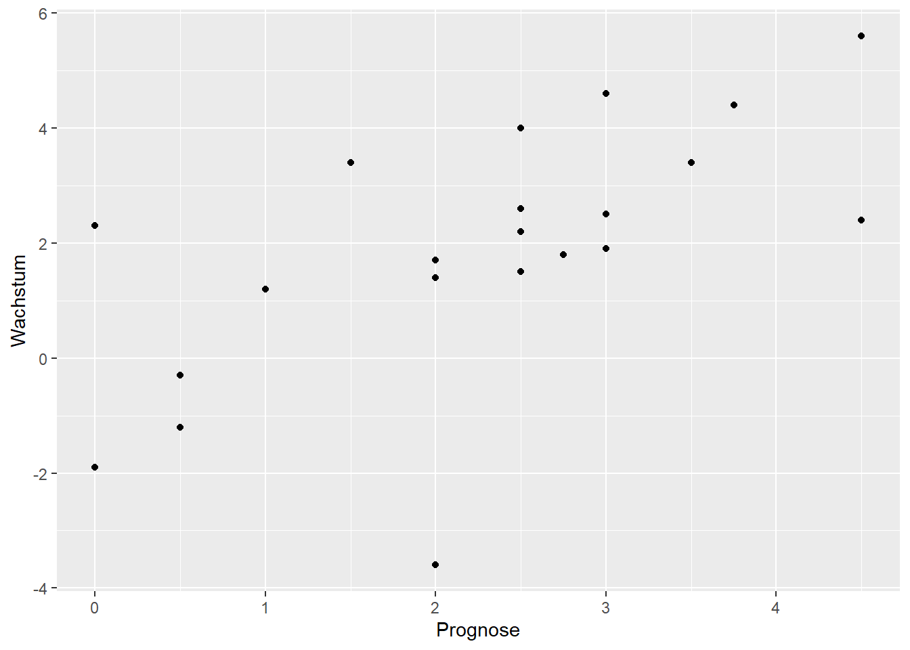
11.2 Prognosen Sachverständigenrat erweitert
ggplot(data = d_svrw, mapping = aes(x = Prognose, y = Wachstum)) +
geom_point(size = 2) + geom_abline(intercept = 0, slope = 1, color = 'red') + geom_rug(color = 'blue')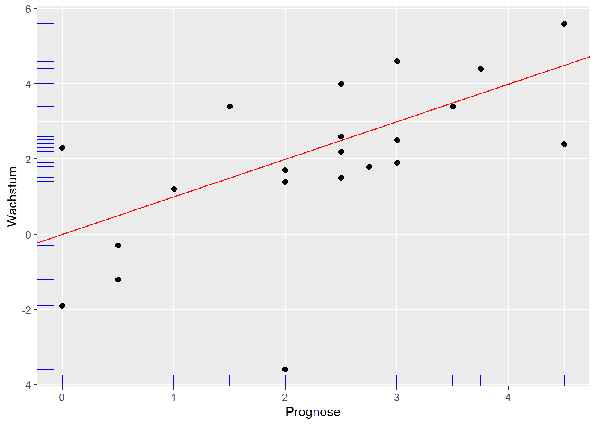
11.3 Prognosen Sachverständigenrat erweitert erklärt
- Gerade mit
geom_abline()undinterceptsowieslope - abline für eine Linie mit \(y = a + bx\) mit dem y-Achsenabschnitt \(a\) =
interceptund der Steigung \(b\) =slope - Beobachtungen entlang der Achsen mit
geom_rug()(Blaue Striche) - rug wie Teppich, da die Linien entlang der Achsen aussehen wie die Fransen eines Teppichs
- Mapping für
geom_point()undgeom_rug()(obere Zeile)
11.4 Ausgaben Gesundheitswesen und Lebenserwartung
ggplot(data = d_le_latest) +
geom_point(mapping = aes(x = he, y = le))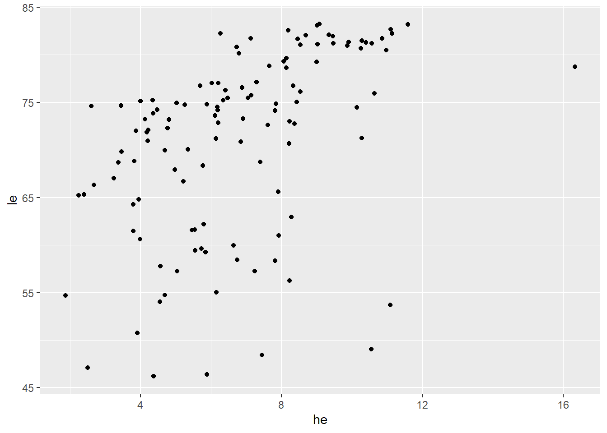
11.5 Ausgaben Gesundheitswesen und Lebenserwartung
ggplot(data = d_le_latest) +
geom_point(mapping = aes(x = he, y = le), shape = 21, fill = 'orange')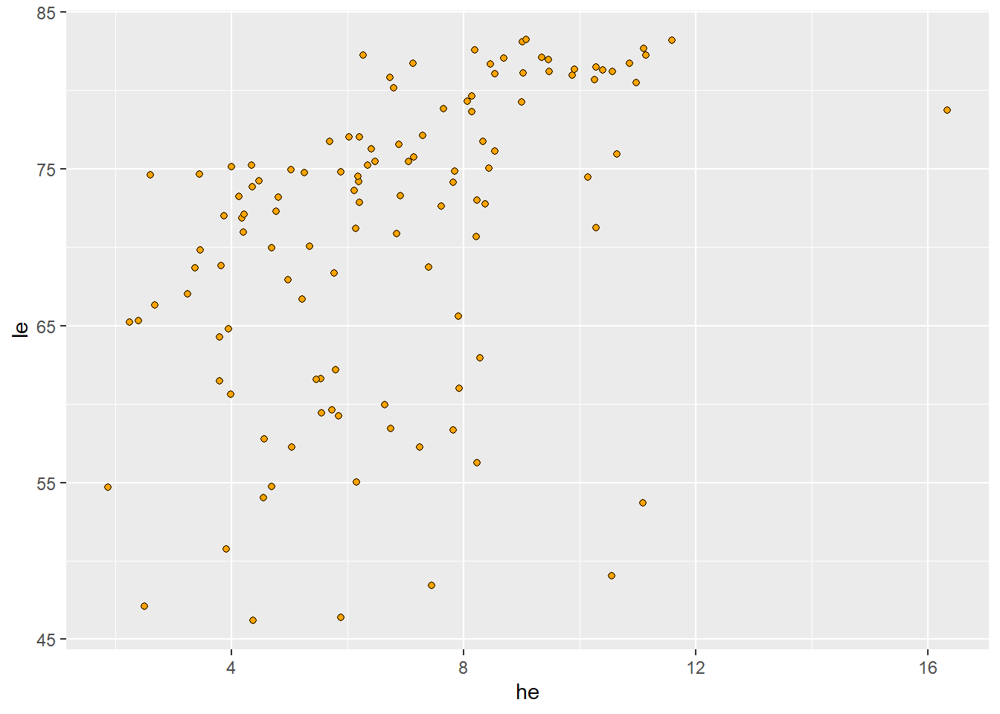
- Farbe und Form der Punkte verändert
11.6 geom_point(): Shapes
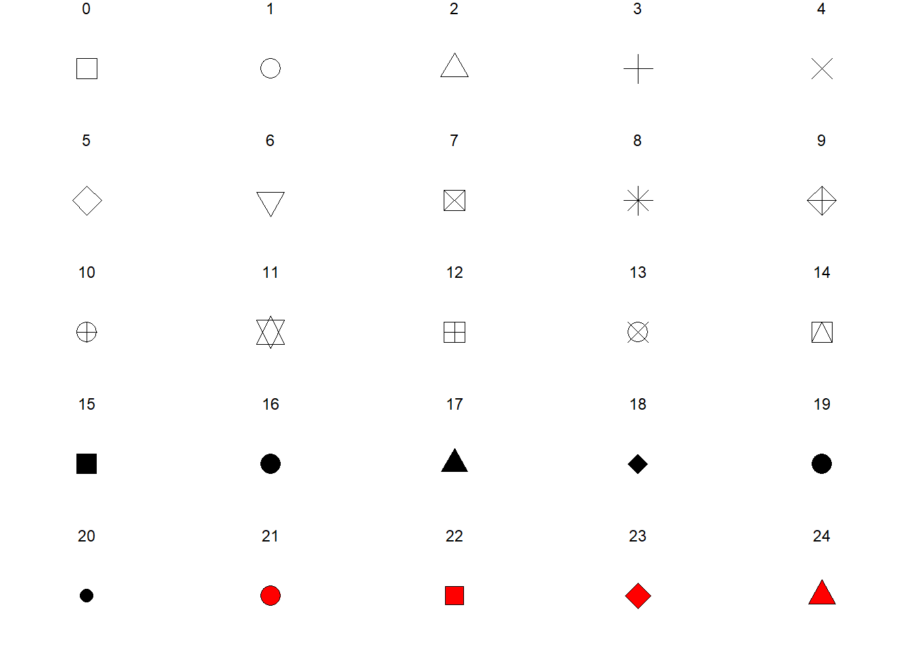
11.7 Interaktive Diagramme mit plotly
p <- ggplot(data=d_le_latest) + geom_point(mapping = aes(x = he, y = le, label = country), shape = 21, fill = 'orange')Warning in geom_point(mapping = aes(x = he, y = le, label = country), shape =
21, : Ignoring unknown aesthetics: labelggplotly(p, width = 800, height = 400)- Weitere Informationen anzeigen mit
label=<M> - Funktioniert nur in HTML (und nicht auf Papier)
11.8 Ausgaben Gesundheitswesen und Lebenserwartung mit Beschriftung, Schritt 1
countries <- c("United States", "Sierra Leone", "Sri Lanka")
d_le_latest <- d_le_latest |> mutate(highlight = country %in% countries)
d_le_labels <- d_le_latest |> filter(country %in% countries)
- Array (verweis zu Basics) mit interessanten/markanten/… Ländern
mutate(): Länder hervorheben mit Merkmalhighlightfilter(): Zeilen mit anderen Ländern herausfiltern- Dazu später mehr (Verweis auf Stelle)
11.9 Ausgaben Gesundheitswesen und Lebenserwartung mit Beschriftung, Schritt 2
p <- ggplot(mapping = aes(x = he, y = le, label = country)) +
geom_point(data = d_le_latest, mapping = aes(color = highlight)) +
geom_label(data = d_le_labels, hjust = 0.7, nudge_y = 2, size = 2.5, alpha = 0.5)- Plot in Variable
pspeichern und auf nächster Folie ausgegeben - Farblich hervorheben mit Merkmal
highlight(siehe oben) - Beschriftung hinzufügen mit
geom_label()(Dokumentation!) - Details später (Verweis)
11.10 Ausgaben Gesundheitswesen und Lebenserwartung mit Beschriftung, Darstellung
p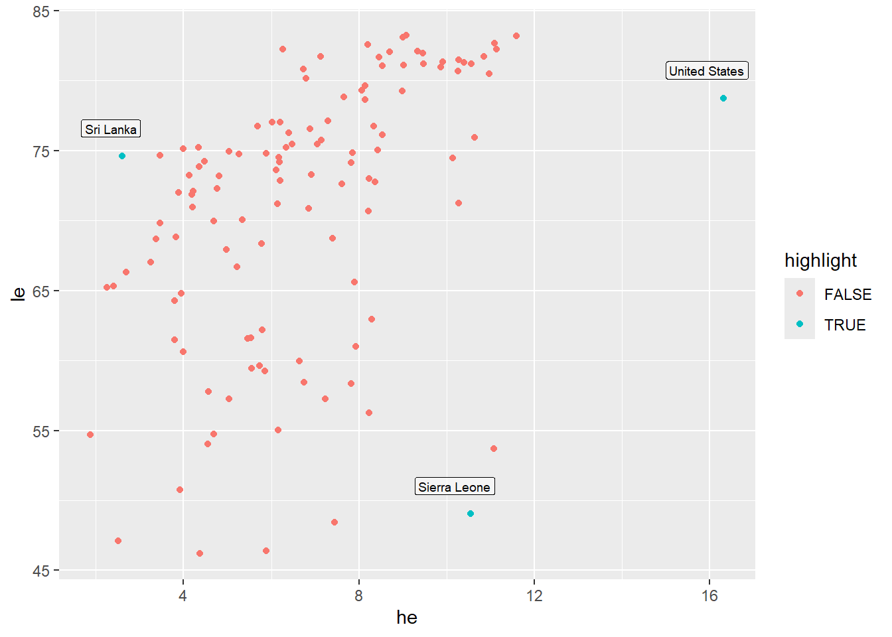
11.11 Blasendiagramm
ggplot(data = d_le_latest) +
geom_point(mapping=aes(x = he, y = le, size = gdppc))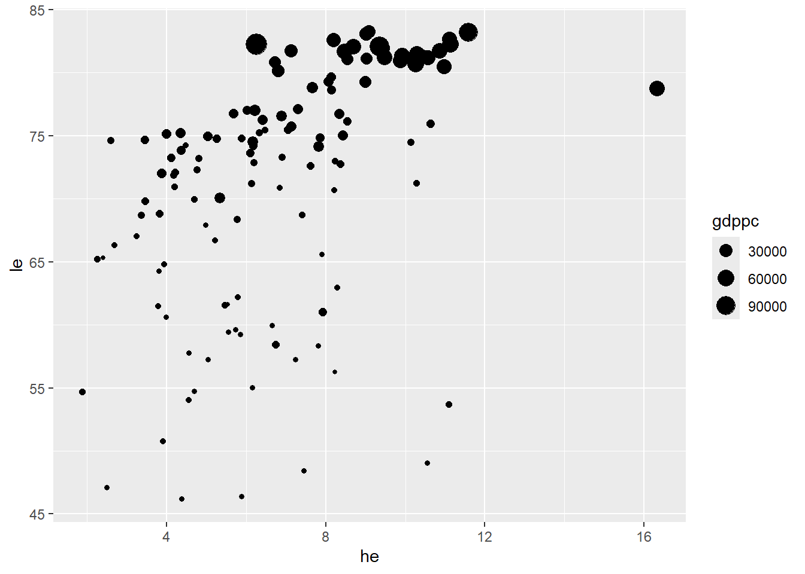
- Skalierung nach BIP pro Kopf
11.12 Darstellung von fünf Merkmalen
d <- tibble(A = c(1, 6, 2, 8), B = c(10, 0, 5, 3.75), C = c(16, 2, 8, 4), D = c('a', 'b', 'b', 'a'), E = c('u', 'u', 'v', 'v'))
ggplot(data = d) + geom_point(mapping = aes(x = A, y = B, size = C, color = D, shape = E))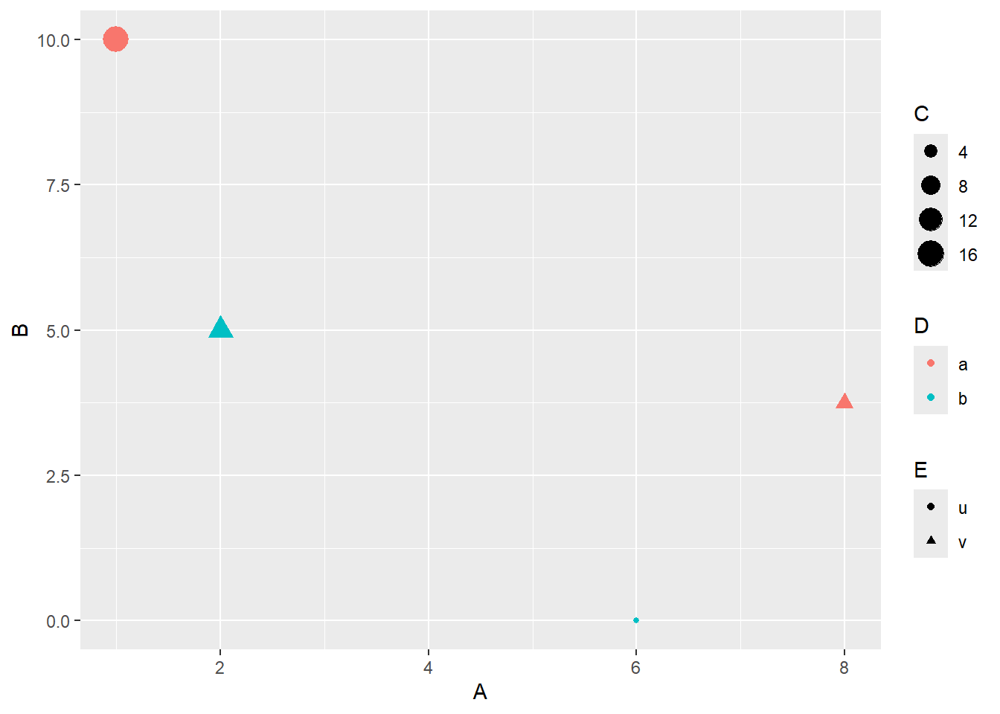
- Hier schwer zu lesen, von Fall zu Fall entscheiden
12 Histogramme und Dichtefunktionen
12.1 Histogramm 2D (Basisversion)
ggplot(data = d_le_latest) +
geom_bin2d(mapping = aes(x = he, y = le))`stat_bin2d()` using `bins = 30`. Pick better value `binwidth`.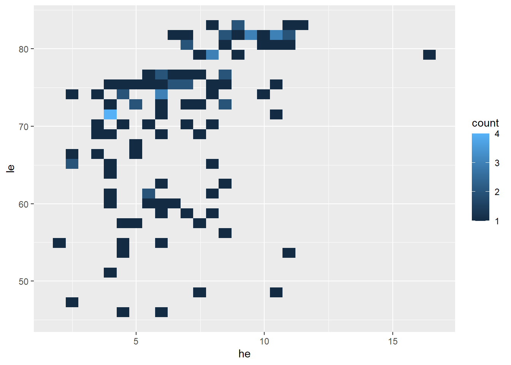
- Histogramm für zwei Merkmale mit
geom_bin2d() - bin wie Feld, Zelle, Klasse + 2D (zweidimensional)
12.2 Histogramm 2D (mit Klassenbreiten)
ggplot(data = d_le_latest) +
geom_bin2d(mapping = aes(x = he, y = le), binwidth = c(1, 4))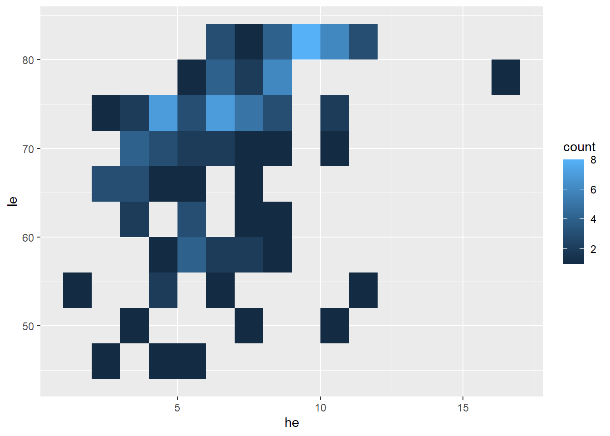
- Klassenbreiten mit
binwidth()und Werten für jede Richtung
12.3 Alternativ mit Sechsecken
ggplot(data = d_le_latest) +
geom_hex(mapping = aes(x=he, y=le), binwidth = c(1, 4))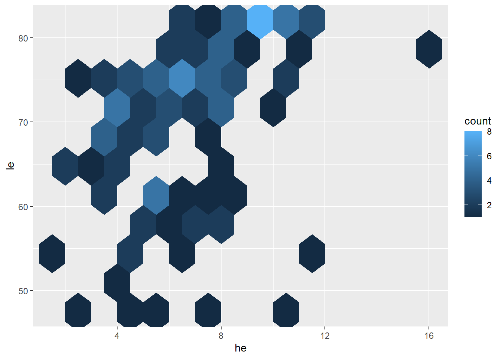
- Unterschied zu vorher:
geom_hexstattgeom_bin2d - hex wie hexagonal
12.4 Dichtefunktion
ggplot(data = d_le_latest) +
geom_density_2d(mapping = aes(x = he, y = le))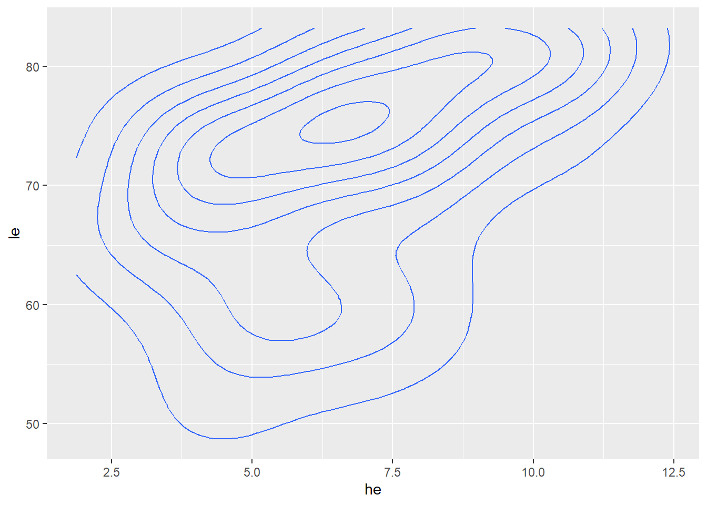
geom_density_2d()erzeugt Höhenlinien der geschätzten Dichtefunktion
12.5 Dichtefunktion gefüllt
ggplot(data = d_le_latest) +
geom_density_2d_filled(mapping = aes(x = he, y = le))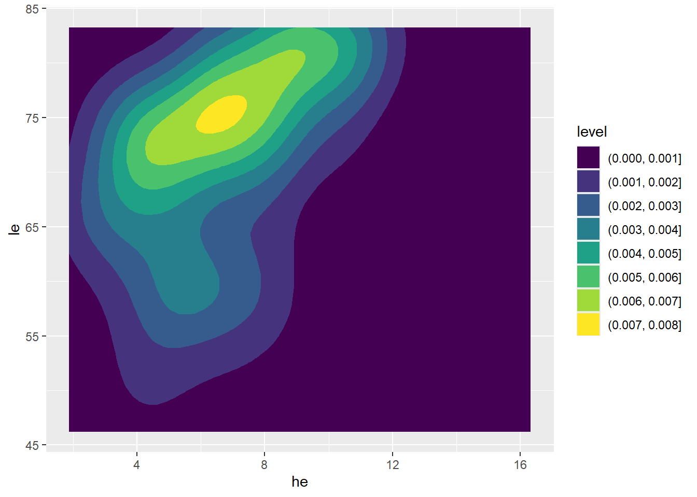
geom_density_2d_filled()färbt nach der geschätzten Dichtefunktion
13 Korrelationskoeffizient
13.1 Korrelationskoeffizient berechnen
d <- tibble(X = c(1, 3, 4, 8), Y = c(2, 3, 3.5, 5.5))
cor(d$X, d$Y)[1] 1- Mit
cor(x, y)wird der Korrelationkoeffizient \(r\) für die Werte inxundyberechnet
13.2 Zugehöriger Plot
ggplot(data = d, mapping = aes(x = X, y = Y)) +
geom_vline(xintercept = mean(d$X), color = 'orange') +
geom_hline(yintercept = mean(d$Y), color = 'orange') +
geom_smooth(formula = y ~ x, method = 'lm', linewidth = 0.25) +
geom_point(size = 3)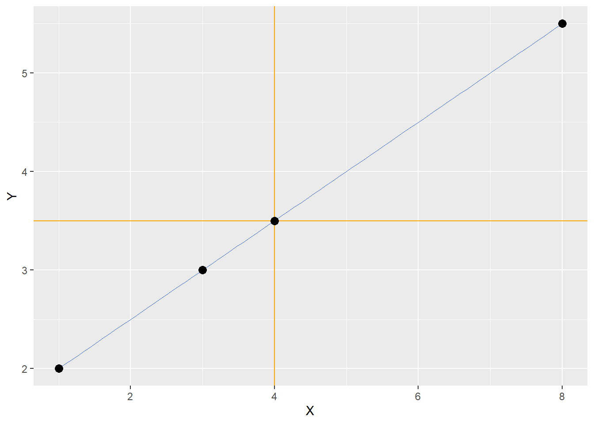
13.3 Korrelationskoeffizienten von Beispieldaten berechnen (1/3)
13.3.1 Wirtschaftsprognosen
cor(d_svrw$Prognose, d_svrw$Wachstum)[1] 0.6367805\(\rightarrow\) Mittlere Korrelation
13.3.2 Pisa-Studie
cor(d_pisa$read, d_pisa$math)[1] 0.939363\(\rightarrow\) Starke positive Korrelation
13.4 Korrelationskoeffizienten von Beispieldaten berechnen (2/3)
13.4.1 Gesundheitsausgaben und Lebenserwartung
cor(d_le_latest$he, d_le_latest$le)[1] 0.4420217
13.4.2 Gini-Koeffizient und Lebenserwartung
cor(d_le_latest$gini, d_le_latest$le)[1] -0.4759603\(\rightarrow\) Mittlere negative Korrelation
13.5 Korrelationskoeffizienten von Beispieldaten berechnen (3/3)
13.5.1 BIP pro Kopf und Lebenserwartung
cor(d_le_latest$gdppc, d_le_latest$le)[1] 0.617262
13.5.2 BIP pro Kopf (logarithmisch) und Lebenserwartung
cor(log10(d_le_latest$gdppc), d_le_latest$le)[1] 0.861658814 Lineare Regression
14.1 Rechenbeispiel
14.1.1 Berechnung der Ausgleichsgeraden
d <- tibble(X = c(1, 2, 3), Y = c(1, 5, 3))
xm = mean(d$X)
ym = mean(d$Y)
betaD = sum((d$X - xm) * (d$Y - ym)) / sum((d$X - xm)^2)
alphaD = ym - betaD * xm- Rechenoperationen werden für Vektoren elementweise ausgeführt (anders als in Matlab)
- Elemente eines Vektors aufsummieren mit
sum() - Dazu später mehr (Verweis)
14.2
14.2.1 Plot der Ausgleichsgeraden
ggplot(data = d) +
geom_abline(intercept = alphaD, slope = betaD, color = 'orange', size = 1) +
geom_point(mapping = aes(x = X, y = Y), size = 3)Warning: Using `size` aesthetic for lines was deprecated in ggplot2 3.4.0.
ℹ Please use `linewidth` instead.
14.3
14.3.1 Ausgleichsgerade mit geom_smooth()
ggplot(data = d, mapping = aes(x = X, y = Y)) +
geom_smooth(formula = y ~ x, method = 'lm', se = FALSE, color = 'orange') +
geom_point(size = 3)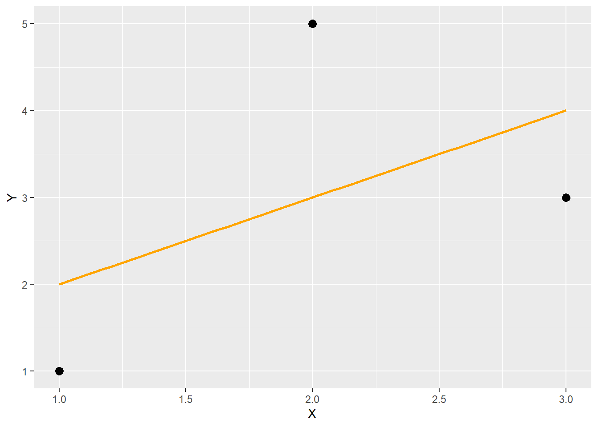
- smooth wie glätten \(\rightarrow\) Glättende Gerade
14.4 Ausgleichskurven mit LOESS, Beispiel 1
d <- tibble( X = 10 * runif(300), Y = sin(2 * pi * X / 10) + 0.2 * rnorm(300))
ggplot(data = d, mapping = aes(x = X, y = Y)) +
geom_point() + geom_smooth(formula = y ~ x, method = "loess", se = FALSE) 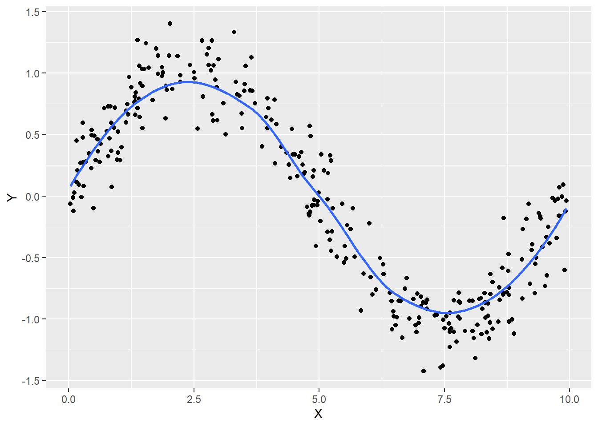
14.5 Ausgleichskurven mit LOESS, Beispiel 2
d <- tibble(X = 10 * runif(20), Y = sin(2 * pi * X / 10) + 0.2 * rnorm(20))
ggplot(data = d, mapping = aes(x = X, y = Y)) +
geom_point() + geom_smooth(formula = y ~ x, method = "loess", se = TRUE) 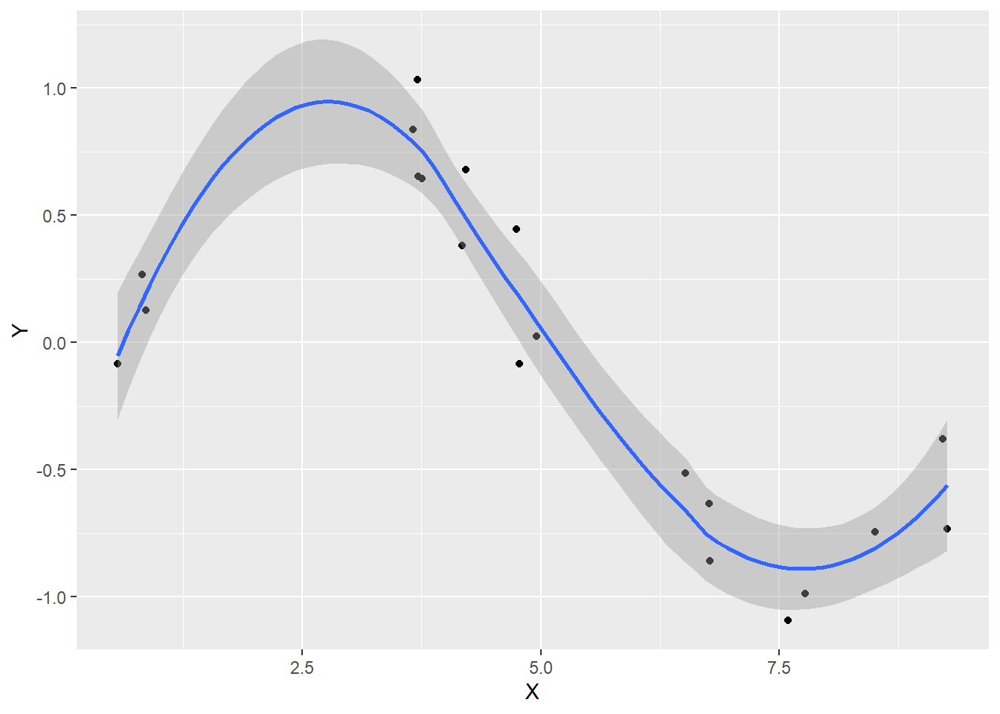
- LOESS: Locally Estimated Scatterplot Smoothing
- Konfidenzintervall anzeigen mit
se = TRUE - Auskunft darüber, wie vertrauenswürdig die berechnete Kurve ist
15 Zusammenfassung
15.1 geom_point()
| AES/Argument | Beschreibung | Optional |
|---|---|---|
| x | Merkmal für x-Position | Nein |
| y | Merkmal für y-Position | Nein |
| shape | Form (nur qualitative Merkmale) | Ja |
| size | Größe (nur stetige Merkmale) | Ja |
| alpha | Transparenz (nur stetige Merkmale) | Ja |
| color | Farbe | Ja |
| fill | Füllfarbe für Shapes 21 ‒ 24 | Ja |
15.2 Geglättete Daten mit geom_smooth()
ggplot(data = <DATAFRAME>) +
geom_smooth(mapping = aes(x = <M>, y = <M>), Argumente)| AES | Beschreibung | Optional |
|---|---|---|
| x | Merkmal für x-Achse | Nein |
| y | Merkmal für y-Achse | Nein |
| Argumente | Beschreibung | Optional |
|---|---|---|
| formula | In der Regel y ~ x |
Nein |
| method | Methode (Linear mit 'lm', LOESS mit 'loess') |
Ja |
| se | Konfidenzintervall anzeigen (TRUE oder FALSE) |
Ja |
| color | Farbe | Ja |
| size | Linienstärke | Ja |